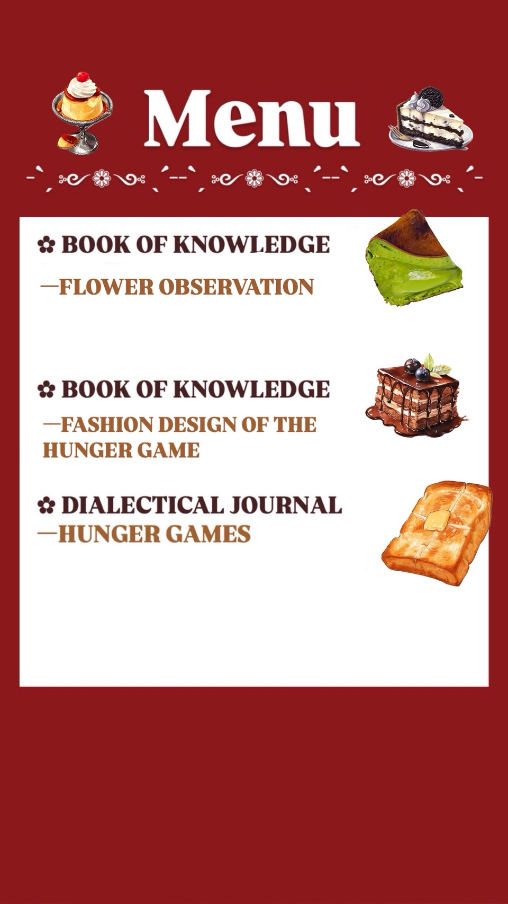
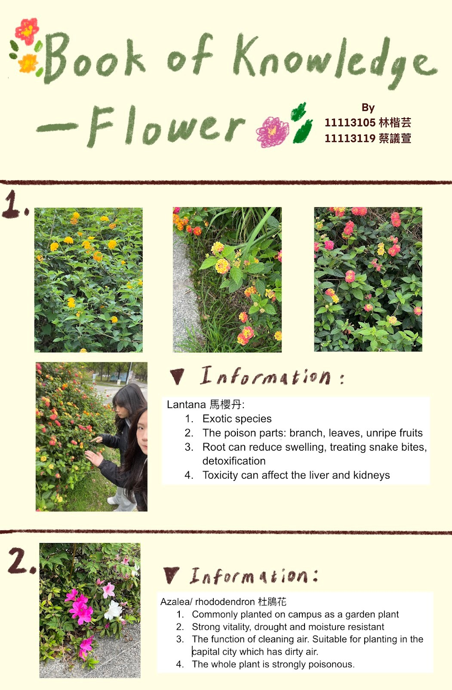
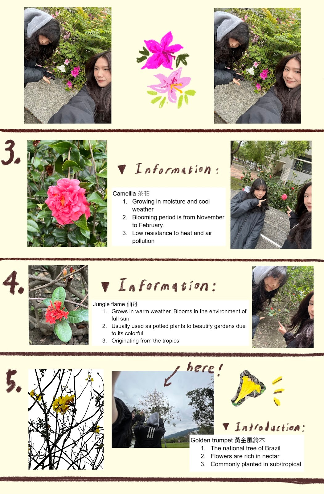
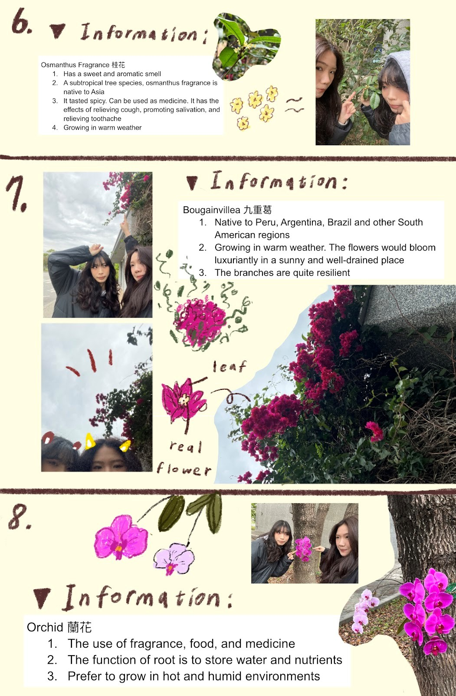
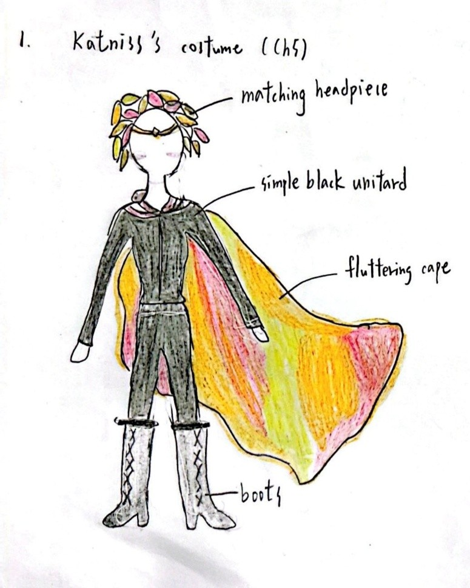
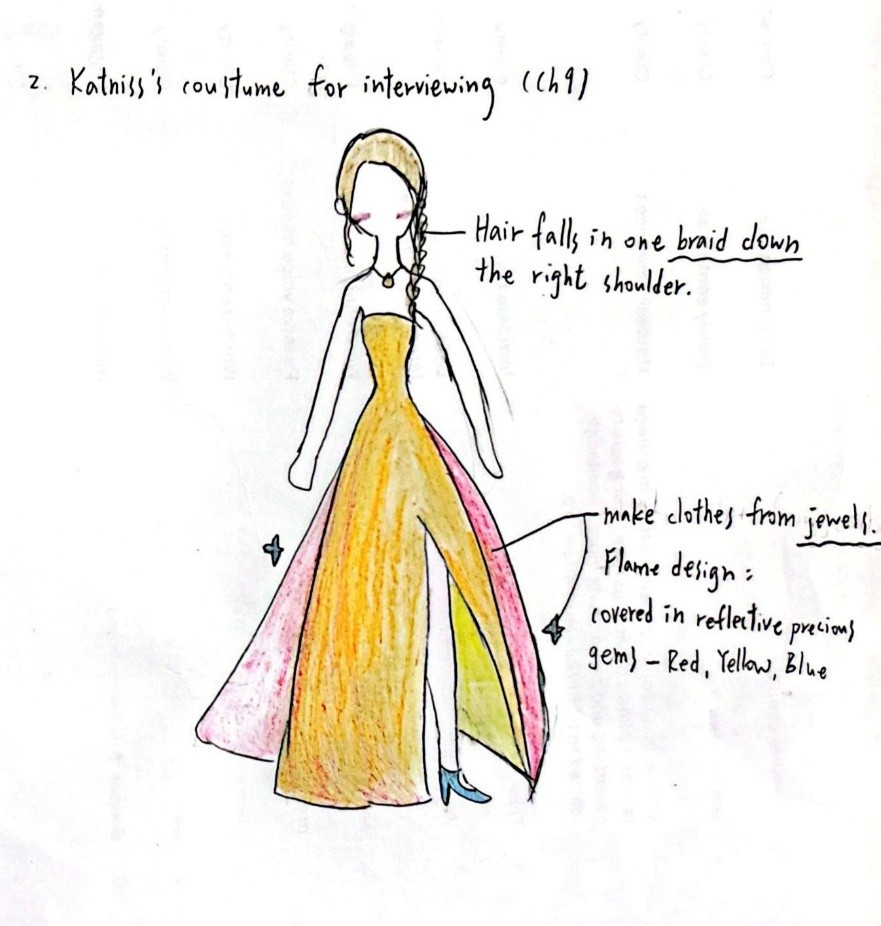
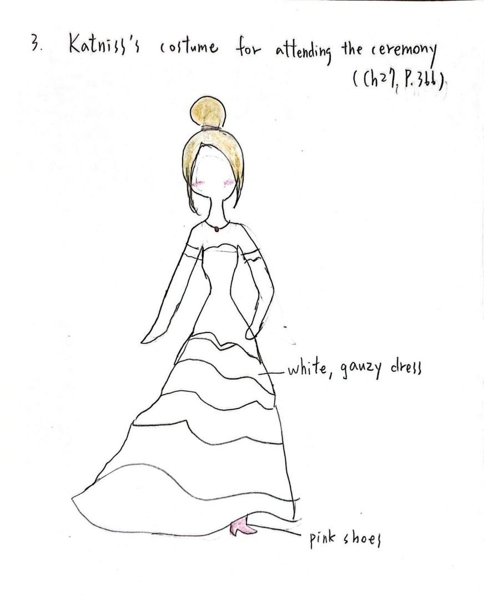

✿Book of Knowledge
- FLOWER OBSERVATION
- Observe the plants and flowers in our campus, learn which are edible and which are not, and explore related information about them.



✿Book of Knowledge
- FASHION DESIGN OF THE HUNGER GAME
- Design Katniss's costumes for different occasions by reading the novel The Hunger Games.



✿Dialectical Journal
- The first voice:
- “What about their brains? Have they been given any of the real tributes' memories? Have they been programmed to hate our faces particularly because we have survived and they were so callously murdered? And the ones we actually killed… do they believe they’re avenging their own deaths?”
- The second voice:
-
In my opinion, the reason the game organizer turned the dead tributes into muttations that attacked Peeta and Katniss was to use these creatures as his eyes to monitor and control the situation. These tributes became useful tools for the organizer. By releasing the mutts, the game became more intense and interesting, creating a climax that entertained both the audience and the organizer. Watching the tributes kill each other in different ways added variety and prevented the game from becoming boring.
However, I think this method is too cruel. The organizer not only controlled the tributes’ actions but also manipulated their minds in some way, turning them into his slaves without their consent. Additionally, the author uses the concept of "mutts" to represent slavery. These former tributes were denied their human rights and freedom, treated like animals in bondage for the amusement of those watching the game.